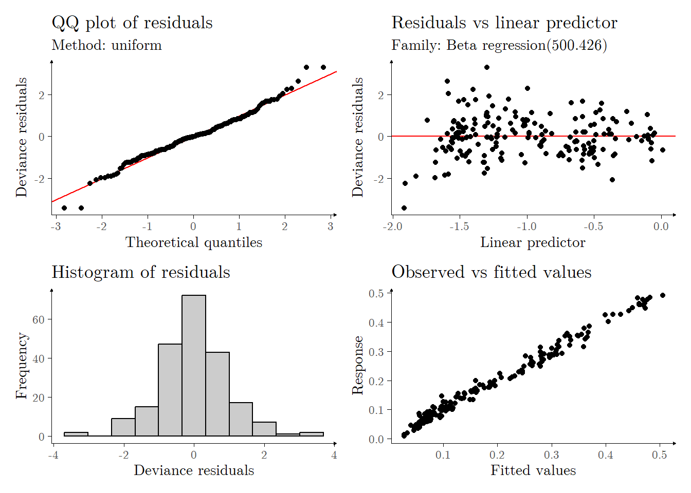

The Tecator Infratec Feed Analyzer data set (seen in Ferraty and Vieu (2006)), is composed of data recorded on a Tecator Infratec Food and Feed Analyzer tool, working in the wavelength range 850 - 1050nm by the Near Infrared Transmission (NIT) principle. Each sample (\(N = 215\)) contains finely chopped pure meat with different moisture, fat and protein contents. For each meat sample the data consists of a 100 channel spectrum of absorbances and the contents of moisture (water), fat and protein. The absorbance is \(-\log_{10}\) of the transmittance measured by the spectrometer. The three contents, measured in percent, are determined by analytic chemistry (click here for further details).
Setup
This vignette is primarily concerned with presenting a set of methods to perform functional regression, motivated by the Tecator Infratec Feed Analyzer dataset, and with computational tools provided by the R programming language. First, a number of packages must be downloaded and subsequently called. In particular, the ‘tidyfun’ package must be downloaded remotely, as it is not yet available on CRAN. The following chunk performs this step:
Show R code
library("fda.usc") ## R package containing the 'tecator' datasetlibrary("tidyverse") ## R package for tidy data manipulation and visualizationlibrary("tf") ## R package for tidy functional data manipulationlibrary("tidyfun") ## R package for tidy functional data visualizationlibrary("extrafont")library("moments") ## R package for computing sample momentslibrary("corrplot") ## R package for visualizing correlogramslibrary("reshape2") ## R package for data manipulationlibrary("refund") ## R package for functional regressionlibrary("forcats") ## R package for data manipulation, particularly factorslibrary("gratia") ## R package for visualizing additive modelslibrary("gamlss") ## R package for generalized additive models for location, scale and shapelibrary("patchwork") ## R package for plot compositionlibrary("magrittr") ## R package for pipes
The ‘tecator’ dataset is sourced from the fda.usc package (see Febrero-Bande and Oviedo de la Fuente (2012)). Noticeably, it is stored therein as a list object - this vignette converts this dataset to a data.frame object, via the tools made available on the tf package, which seeks to provide classes and methods for “Tidy Functional Data”, inspired by the greater existing tidyverse packages for data manipulation and visualization. The following chunk performs this conversion:
Show R code
## Importing the 'tecator' datasetdata(tecator)## Converting 'tecator' to df (data frame)tecator_data =data.frame(fat = tecator$y$Fat,water = tecator$y$Water,protein = tecator$y$Protein)## Adding the functional data, in tfd structure, to the df objecttecator_data %<>%mutate(absorbance =tfd(data = tecator$absorp.fdata$data,arg = tecator$absorp.fdata$argvals))## Separating data by fat percentagetecator_data %<>%mutate(fat20 =factor(ifelse(test = (fat >=20),yes ="20% > Fat",no ="20% < Fat"),levels =c("20% > Fat","20% < Fat")))
Table 1 illustrates how functional data is stored within a data.frame object through the implementation of the tf package - in particular, the absorbance column is stored as a tfd object, such that, to every row within the resulting data frame, there exists a corresponding functional observation.
fat
water
protein
absorbance
fat20
22.5
60.5
16.7
1: (850,3);(852,3);(854,3); …
20% > Fat
40.1
46.0
13.5
2: (850,3);(852,3);(854,3); …
20% > Fat
8.4
71.0
20.5
3: (850,3);(852,3);(854,3); …
20% < Fat
5.9
72.8
20.7
4: (850,3);(852,3);(854,3); …
20% < Fat
25.5
58.3
15.5
5: (850,3);(852,3);(854,3); …
20% > Fat
Table 1: Snapshot of the five first rows of the ‘tecator’ dataset. Note that the column labelled as ‘absorbance’ is composed of ‘tfd’ objects, from the ‘tidyfun’ R package.
Exploratory Data Analysis
Fat percentage
Expressly, the main goal of this application is to construct a predictive model for the fat percentage of the meat samples, utilizing corresponding absorbance curves as model covariates. For that purpose, first a simple exploratory analysis of the data must be performed, to allow for model elicitation. Figure 1 and Table 2 seen below provide a brief view of the distribution of the fat percentage. Hereafter, the observed values of fat percentage in the dataset may also be referred to as \(y_1,\ldots,y_{215}\), which is assumed to be sampled from a set of independent random variables \(Y_1,\ldots,Y_{215}\) with unknown distribution.
Figure 1: Left panel: sample estimated density of the fat percentage. Right panel: sample boxplot of the fat percentage.
Min.
1st Qu.
Median
Mean
3rd Qu.
Max.
0.9
7.3
14
18.142
28
49.1
Table 2: Sample summary statistics of the fat percentage.
Additionally, the sample skewness and kurtosis were computed as \(\widehat{\text{Skew}}(Y) \approx 0.802\) and \(\widehat{\text{Kurt}}(Y) \approx 2.573\). As the data refers to a percentage value, its support is bounded on the interval \([0,100]\), which may be normalized to the unit interval \([0,1]\) for computatibility purposes. As none of the observed values are at the boundaries \(0\) or \(1\) (and it is reasonable to assume that no observation will attain this value), the fat percentage may likewise be assumed to belong to the strictly closed \((0,100)\) interval. Generalized linear models may consequently be more appropriate to model this form of data, in particular for families with bounded support (e.g.: Beta regression).
Absorbance curves
The absorbance curve data, unlike the fat percentage data seen in the previous subsections, is composed of values obtainted discreetly by subjecting each of the meat samples to a spectrometric measuring device varying in the 850 - 1050nm wavelength range uniformly, with \(100\) equal design points across all meat samples. This results in \(100 \cdot 215 = 21500\) observations in total. Figure 2 and Figure 3 provide a brief analysis on the distribution of the data; the plotted data is composed of the raw (i.e.: not smoothed) data. As previous reports have indicated the presence of an additional peak on the absorbance curves around the 930nm wavelength for meat samples with fat percentage superceding 20, the data are separated amongst these two groups.
Figure 2: Left panel: spaghetti plot of the absorbance curves, separated by fat percentage. Right panel: mean absorbance curves, separated by fat percentage.
Figure 3: Left panel: absorbance variance curves, separated by fat percentage. Right panel: correlogram of the absorbance curves.
From a modelling standpoint, the values obtained at each design point may be considered covariates \(x_{i,1},\ldots,x_{i,100}\), for \(i \in \{1,\ldots,215\}\), and as \(100 = p < N = 215\), even a simple linear regression model is feasible. However, as evidenced in the Right panel of Figure 3, the data is highly correlated. Note that the minimum absolute correlation observed across the absorbance curves was \(\min_{i,j}\{\vert \rho_{i,j} \vert\} \approx 0.963\). This implies that, were the data applied indiscriminately in a simpler linear regression model, it would be subject to a significant amount of multicollinearity. Alternatively, each absorbance curve may be considered a functional covariate \(\chi_{1},\ldots,\chi_{215}\), which may be estimated by smoothing the discrete observed values, allowing for a more flexible form of high-dimensional modelling through functional regression. Adopting the purview of functional data analysis in this context also presents other advantages: functionals (i.e.: derivatives, integrals, etc.) of the data in question may likewise be explored. It is important to remark that the values of these functionals is dependent on the support of the data in question. The method ‘tf_derive()’, part of the ‘tf’ ‘R’ package, allows for the computation of the first-order derivative of the absorbance curves. Table 3 provides a view of the inclusion of the derivative column.
fat
absorbance
dabsorbance
22.5
1: (850,3);(852,3);(854,3); …
1: (851,2e-04);(853,2e-04);(855,3e-04); …
40.1
2: (850,3);(852,3);(854,3); …
2: (851,0.002);(853,0.002);(855,0.002); …
8.4
3: (850,3);(852,3);(854,3); …
3: (851,9e-04);(853,8e-04);(855,9e-04); …
5.9
4: (850,3);(852,3);(854,3); …
4: (851,9e-04);(853,8e-04);(855,9e-04); …
25.5
5: (850,3);(852,3);(854,3); …
5: (851,9e-04);(853,9e-04);(855,9e-04); …
Table 3: Comparisons of the ‘absorbance’ and ‘dabsorbance’ columns of the five first rows of the ‘tecator’ dataset. The column labelled as ‘dabsorbance’ is composed of ‘tfd’ objects, and represents the first order derivative of the ‘absorbance’ column, as computed via finite differences.
As similarly seen in previous reports, the derivative of the absorbance curves is significantly different for meat samples with fat percentage greater than 20%, as illustrated by Figure 4 and Figure 5. Unlike the usual absorbance curves, in this context the minimum absolute correlation observed across the derivatives of the absorbance curves is \(\min_{i,j}\{\vert \tilde{\rho}_{i,j} \vert\} \approx 0\). The \(D\) symbol is adopted to denote the application of the derivative. Note, in the Right panel of Figure 5, that the correlogram presents a steep decrease in correlation between the 930nm and 950nm wavelengths. This corresponds to a steep valley in the mean function for the data with fat percentage greater than 20, as seen in the Right panel of Figure 4.
Figure 4: Left panel: spaghetti plot of the derivative of the absorbance curves, separated by fat percentage. Right panel: mean derivative of the absorbance curves, separated by fat percentage.
Figure 5: Left panel: variance of the derivative of the absorbance curves, separated by fat percentage. Right panel: correlogram of the derivative of the absorbance curves.
An usual problem when dealing with multivariate data is that, in the absence of greater context, there is no singular approach to determining a ranking of observations. This is also true of functional data, hence there is no specific way to determine functional quantiles, nor a universal definition of a functional outlier. López-Pintado and Romo (2009) defines a form of functional depth, which allows for the computation of the functional median (as well as other quantiles), a work which was latter expanded in Sun and Genton (2011), wherein the procedure to construct a functional boxplot was delineated, allowing also for outlier detection. The computational implementation of functional boxplots is available in the ‘fda’ package for the R programming language, as part of the method fbplot(). Moreover, the computation of the functional depth developed in López-Pintado and Romo (2009) is available in the tf package through the tf_depth() method. Figure 6 displays functional boxplots of the absorbance curves, as well as their corresponding derivatives. Interesting insights may be gleaned with respect to manner in which functional depth detects outliers: in the first boxplot the observations \(43\), \(44\), \(99\), \(140\) and \(185\) are classified as outliers, whilst for the second boxplot, only the observation \(140\) is classified as an outlier. This is a sensible result, as it may be observed that the outlier observations in the former plot present significant vertical shift with respect to the median curves, and the first order derivative of a function is invariant with respect to any constant term (i.e., any constant vertical shift), hence the application of the derivative ‘standardizes’ the absorbance curves. Figure 7 enhances previous plots seen in Figure 2 and Figure 4 by highlighting outlier curves. As previously stated, the outlier curves for the absorbance curves possess significant vertical shift ‘upwards’, i.e., they are consistently greater than the mass of functional data, but also present a similar overall ‘shape’. By contrast, the sole outlier for the derivative of the absorbance curves presents more complex behaviour, initially being greater than the mass of functional data, and crossing over so that it is lesser. We note, from Figure 8, that the functional mean and median are very similar in the case of the derivative of the absorbance curves, whilst for the absorbance curves themselves there is indication of positive skewness, particularly for curves whose corresponding meat sample has more than 20% of fat.
Figure 7: Upper panel: spaghetti plot of the absorbance curves, separated by fat percentage, with outlier curves highlighted in black; observation \(140\) is likewise dashed. Lower panel: spaghetti plot of the derivative of the absorbance curves, separated by fat percentage, with outlier curves highlighted in black.
Figure 8: Upper panel: mean and median absorbance curves, separated by fat percentage, represented respectively by solid and dashed curves. Lower panel: mean and median derivative of the absorbance curves, separated by fat percentage, represented respectively by solid and dashed curves.
Note that Figure 2, Figure 3 and Figure 4 display the raw absorbance curves (and corresponding derivatives), that is, we employ no smoothing techniques in those displays. This is feasible for this particular data set due to the fact that the absorbance curves (and corresponding derivatives) are contaminated by very little noise. The method tfb(), of the ‘tidyfun’ allows us to represent variables originally stored as tfd objects, ideal for raw functional data, to variables stored as tfb functional data, which is ideal for representing functional data as a linear combination of a finite number of basis functions; this is done by an interface with methods on the ‘mgcv’ R package. In particular, we will smooth the usual absorbance curves utilizing \(K = 15\) B-spline basis, whilst the derivatives of the absorbance curves will be smoothed utilizing \(K = 30\) B-spline basis. The results are presented in Figures Figure 9 and Figure 10. Whilst certain distinctions are visible between the raw and smoothed data, it is apparent that the smoothed data provides a reasonable approximation to the sampled curves. Moreover, we note that the tfb() method itself provides a diagnostic with respect to the amount of variability preserved in the basis representation (which is ommited in the present study, but is exhibited by setting the argument verbose = TRUE): for both generated tfb objects the basis representations preserve a minimum of \(99.8\%\) variability. We may now proceed to studying the functional regression problem.
Figure 10: Left panel: raw derivative of the absorbance curves. Right panel: smoothed derivative of the absorbance curves.
Ultimately, as the observed functions are sufficiently regular, the functional regression models applied in the following section were constructed utilizing the raw absorbance curves as predictors, and this exploration was mostly illustrative.
Functional Regression
For this present data set we will consider two possible models for the relationship between the mean fat percentage of sampled meats and their corresponding absorbance curves, given as follows
Equation 1 corresponds to the usual form of a Generalized Functional Linear Model (GFLM), whilst Equation 2 corresponds to a more complex model, the Functional Generalized Additive Model (FGAM)1, as seen in McLean et al. (2014). Both of these models are implemented on the ‘refund’ R package (see Goldsmith et al. (2024)), under the pfr() and fgam() methods, respectively. This form of functional regression problem, wherein the response variable is a scalar variable and the predictors are functions, is referred to as scalar-on-function (SoF) regression. For both models to be studied presently, we will take \(Y_i \sim \text{Beta}(\mu_i,\phi)\), with mean as in Equation 1 or Equation 2, and deviation \(\phi > 0\). In order to better diagnose the proposed models, we will split the data set into a training set, composed of \(N_\text{train} = 108\) observations, and a test data set, composed of \(N_\text{test} = 107\) observations.
Figure 11: Left panel: smoothed absorbance curves on the training set. Right panel: smoothed absorbance curves on the test set.
Generalized Functional Linear Model
For the GFLM, we rewrite the linear term \(\beta_1(\cdot)\) in Equation 1 as a one-dimensional basis expansion of \(K\) cubic spline (wherein other basis expansions are also available), such that: \[
\beta_1(s) = \sum^K_{j = 1} \theta_j \textbf{B}_{j}(t).
\] Hence, we rewrite the inverse of the link function applied to the mean \(\mu_i\) as \[
g^{-1}(\mu_i) = \beta_0 + \int^{1050}_{850} \beta_1(s) D \chi_i(s) \; \text{d}s = \beta_0 + \sum^K_{j = 1}\theta_j Z_{j}(i),
\] where \[
Z_j(i) = \int^{1050}_{850} \beta_1(s) D \chi_i(s) \; \text{d}s.
\] Thus, we essentially reduce the infinite-dimensional problem of estimating \(\beta_1(\cdot)\) into a finite-dimensional problem of estimating the values of \(\beta_0\) and \(\mathbf{\theta}\). In this context, there are a number of configurations to be determined, which include
The number of components \(K\) for \(\beta_1(t)\);
The link function \(g(\cdot)\) to be adopted;
The family adopted in the fitting procedure;
amongst other settings. For \(K\), we selected \(K = 30\), as for \(K > 30\) the estimates \(\hat{\beta}_1(t)\) present little variation. The link function was chosen as probit, albeit similar to the tuning of \(K\), there were very small diferences when comapared to the other link functions. Lastly, as alluded to previously on the exploratory data analysis step, we choose to consider the response variable as Beta distributed. Figure 12 exhibits the resulting residual analysis which is obtained (utilizing the appraise() method from the gratiaR package): note the presence of a pattern on the residuals versus linear predictor plot.
Before applying it, we will present some aspects of the FGAM model, as seen in McLean et al. (2014). First, we rewrite the functional additive term in the form of a tensor product expansion of two marginal cubic spline functions (other basis expansions are also available), of orders \(K_1\) and \(K_2\), as follows: \[
F\{t, D \chi_i(t)\} = \sum^{K_1}_{j_1 = 1}\sum^{K_2}_{j_2 = 1}\theta_{j_1,j_2} \textbf{B}_{1,j_1}(t) \textbf{B}_{2,j_2}(D \chi_i (t)).
\] Hence, we rewrite the inverse of the link function applied to the mean \(\mu_i\) as \[
g^{-1}(\mu_i) = \beta_0 + \!\!\int^{1050}_{850} F\{s,D \chi_i(s)\} \; \text{d}s = \beta_0 + \sum^{K_1}_{j_1 = 1}\sum^{K_2}_{j_2 = 1} \theta_{j_1,j_2}Z_{j_1,j_2}(i),
\] where \[
Z_{j_1,j_2}(i) = \!\!\int^{1050}_{850} \textbf{B}_{1,j_1}(s) \textbf{B}_{2,j_2}(D \chi_i (s)) \; \text{d}s.
\] That is, similarly to the GFLM, we have reduced the infinite-dimensional problem of estimating \(F\{\cdot,\cdot\}\) into a finite-dimensional estimating problem where we seek to determine the parameters \(\beta_0\) and \(\mathbf{\theta}\), for example, via restricted maximum likelihood methods. There are a panoply of settings to be tuned when estimating an FGAM, such as:
The number of components \(K_1\) and \(K_2\) on the functional additive term;
The link function \(g(\cdot)\) to be adopted;
The family adopted in the fitting procedure;
amongst others. The third setting was alluded to previously when presenting the analysis of the Fat percentage data, wherein we observed that a distribution family of bounded support is ideal for the response variable, hence we will adopt the Beta regression framework. With respect to the link function, we determined, via residual analysis, that the probit link function results in the best fit (when comapared to the cloglog, cauchit and logit link functions). For the number of components on the functional additive term, we defined \(K_1 = K_2 = K\), and visually examined the predictive behavior of the models for \(K \in \{1,2,\ldots,10\}\). Figure 13 exhibits fitted versus true values, separated by training data and test data, for \(K \in \{5,6,7\}\). We note that the model with \(K = 6\) presents less variability than the model with \(K = 5\), however the distinction between the model with \(K = 6\) and \(K = 7\) is less apparent. Likewise, we find that the change in estimate variability is similar through \(K > 6\). Therefore, we likewise determined the ideal number of components via residuals analysis as \(K = 6\).
On estimating the deviation parameter
Due to an error, the fgam() function does not estimate the deviation parameter \(\phi\). Therefore, we have coupled the fgam() method from the refundR package and the gamlss() method from the gamlssR package in order to estimate it. We first estimate the FGAM model, with the fgam() method, utilizing a fixed deviation parameter \(\phi_0\) (which we have chosen as \(\phi_0 = 1\)). We subsequently estimate another Beta regression model using the gamlss() method, with fixed mean values \(\hat{\mathbf{\mu}}\) obtained from the fitted FGAM model, according to Equation 2, and obtain the value of the scale parameter estimate \(\hat{\sigma}^2\). Note that the parametrization of the variance in the Beta regression model differs between the mgcv implementation (and consequently the fgam() method) and the gamlss implementation. mgcv parametrizes the variance of \(Y_i\) as \[
\mathbb{V}\text{ar}[Y_i \vert \mu_i] = \frac{\mu_i(1 - \mu_i)}{1 + \phi},
\] conversely, gamlss parametrizes the variance of \(Y_i\) as \[
\mathbb{V}\text{ar}[Y_i \vert \mu_i] = \sigma^2 \mu_i(1 - \mu_i).
\] Consequently, we estimate the deviance parameter, based in the scale parameter estimate obtained by gamlss, as \[
\hat{\phi} = \frac{1 - \hat{\sigma}^2}{\hat{\sigma}^2}.
\tag{3}\] We thereafter reestimate the FGAM model using a fixed deviance estimate obtained via Equation 3, repeating the procedure until a maximum number of iterations is reached (which we have set to 25). An additional benefit of this coupling is that it allows us to utilize the residual analysis tools available from the gamlss package to better diagnose our model’s fit.
Figure 14: Fitted values versus true values of Fat percentage, separated between training and test data sets, for \(K \in \{5,6,7\}\).
Figure 15 depicts some residual analysis plots output by the appraise() method from the gratia package in R. The QQ plot presents deviations at the extremes, and the linear predictor versus deviance residuals plot exhibits evidence of non-homoscedastic behavior, with a higher variation in residuals with lower corresponding linear predictors values. Nevertheless, we conclude the model exhibits a sufficiently good fit, when estimated solely on the training data.
Figure 15: Residual analysis plot generated via the appraise() method for the training data set.
Figure 16 depicts the residual analysis plots output by the appraise() method for the model constructed utilizing the full data set, with \(K = 6\). The residuals present similar behavior to that which was noted in Figure 16, and as such we conclude again that the fit is sufficiently good.

Figure 16: Residual analysis plot generated via the appraise() method for the complete data set.
Show R code
se =smooth_estimates(fit_total, dist = .05)se |>draw() +theme_classic() +theme(text =element_text(size =unit(11, "pt"),family ="LM Roman 10",color ="black"),axis.line =element_line(arrow = grid::arrow(length =unit(0.08, "cm"), ends ="last",angle =30,type ="closed"),linewidth = .25),axis.ticks =element_line(color ="black",linewidth = .125),legend.position ="right") +labs(x =expression(paste("Wavelength ", "(in ", italic("nm"), ")")),y =substitute(paste(italic("D"),"Absorbance")),,col ="",subtitle ="",tag ="",caption ="") +scale_x_continuous(expand =c(0, 0),breaks =c(0, .5, 1),labels =c("850", "950", "1050"),limits =c(0.01169591, 1.004762)) +scale_y_continuous(expand =c(0, 0)) +ggtitle(substitute(paste("te(",italic("D"),"Absorbance,", italic(t), ")"))) +scale_fill_continuous(type ="viridis",guide ="colourbar") +guides(fill =guide_colourbar(title =substitute(paste("Partial effect"))))#> Scale for fill is already present.#> Adding another scale for fill, which will replace the existing scale.
Concluding Remarks
An additional approach suggested in McLean et al. (2014) is to transform our functional covariate before utilizing it in the FGAM model. In particular,
where \(h(t)\) is a tuning parameter, potentially dependent on \(t\).
References
Eckardt, Matthias, Jorge Mateu, and Sonja Greven. 2024. “Generalized Functional Additive Mixed Models with (Functional) Compositional Covariates for Areal Covid-19 Incidence Curves.”Journal of the Royal Statistical Society Series C: Applied Statistics 73 (4): 880–901. https://doi.org/10.1093/jrsssc/qlae016.
Febrero-Bande, Manuel, and Manuel Oviedo de la Fuente. 2012. “Statistical Computing in Functional Data Analysis: The R Package fda.usc.”Journal of Statistical Software 51 (4): 1–28. https://www.jstatsoft.org/v51/i04/.
Goldsmith, Jeff, Fabian Scheipl, Lei Huang, Julia Wrobel, Chongzhi Di, Jonathan Gellar, Jaroslaw Harezlak, et al. 2024. Refund: Regression with Functional Data. https://CRAN.R-project.org/package=refund.
López-Pintado, Sara, and Juan Romo. 2009. “On the Concept of Depth for Functional Data.”Journal of the American Statistical Association 104 (486): 718–34. https://doi.org/10.1198/jasa.2009.0108.
McLean, Mathew W., Giles Hooker, Ana-Maria Staicu, Fabian Scheipl, and David Ruppert. 2014. “Functional Generalized Additive Models.”Journal of Computational and Graphical Statistics 23 (1): 249–69. https://doi.org/10.1080/10618600.2012.729985.
Scheipl, Fabian, Jeff Goldsmith, and Julia Wrobel. 2023. Tidyfun: Tools for Tidy Functional Data.
Sun, Ying, and Marc G. Genton. 2011. “Functional Boxplots.”Journal of Computational and Graphical Statistics 20 (2): 316–34. https://doi.org/10.1198/jcgs.2011.09224.
———. 2004. “Stable and Efficient Multiple Smoothing Parameter Estimation for Generalized Additive Models.”Journal of the American Statistical Association 99 (467): 673–86. https://doi.org/10.1198/016214504000000980.
———. 2011. “Fast Stable Restricted Maximum Likelihood and Marginal Likelihood Estimation of Semiparametric Generalized Linear Models.”Journal of the Royal Statistical Society (B) 73 (1): 3–36. https://doi.org/10.1111/j.1467-9868.2010.00749.x.
———. 2017. Generalized Additive Models: An Introduction with R. 2nd ed. Chapman; Hall/CRC.
Wood, S. N., N. Pya, and B. Säfken. 2016. “Smoothing Parameter and Model Selection for General Smooth Models (with Discussion).”Journal of the American Statistical Association 111: 1548–75. https://doi.org/10.1080/01621459.2016.1180986.
Footnotes
It is apparent from the acronyms GFLM and FGAM that the position of the terms ‘Functional’ and ‘Generalized’ are interchangeable when denoting these models. Indeed, some references (see for example Eckardt, Mateu, and Greven (2024)) exchange the order of these terms in the latter acronym.↩︎